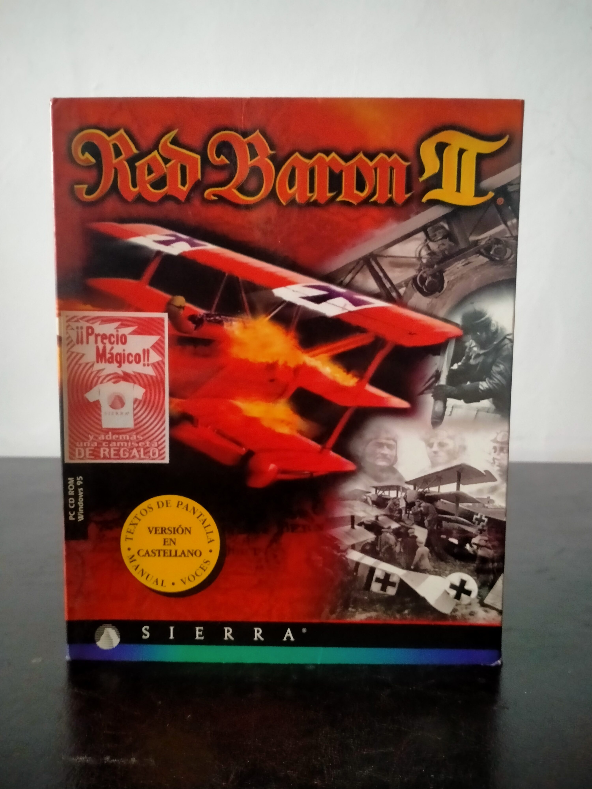

Ficha #000000
Red Baron II
Red Baron II es la secuela del célebre simulador de combate aéreo ambientado en la Primera Guerra Mundial, desarrollado por Dynamix y publicado por Sierra en 1997. El juego traslada al jugador a los cielos del frente occidental en 1914-1918, recreando duelos entre biplanos con una mezcla de simulación accesible, componente histórico y fuerte énfasis en la inmersión. Su propuesta gira en torno a campañas, misiones individuales y combates en red, permitiendo pilotar aparatos de distintas naciones y enfrentarse en dogfights donde la altura, la energía y la puntería importan tanto como la sangre fría. Uno de sus mayores atractivos fue la ambientación: Red Baron II no buscaba solo ofrecer acción, sino también transmitir la fragilidad de aquellos primeros aviones de combate, construidos con madera, tela y motores limitados. El resultado era una experiencia muy distinta a la de los simuladores de reactores modernos, más táctica y cercana, con combates visuales y maniobras ajustadas a corta distancia. Además, el juego incorporó editor de misiones y opciones de personalización, ampliando notablemente su vida útil. Esta edición española Big Box de Sierra destaca por su poderosa portada en tonos rojos y por su clara orientación al mercado local, con textos de pantalla, manual y voces en castellano. Dentro del coleccionismo de PC, Red Baron II representa muy bien una época en la que Sierra seguía publicando simuladores ambiciosos en gran formato, acompañados de abundante documentación física. Es una pieza especialmente interesante para aficionados a la aviación histórica, a Dynamix y a la edad dorada de la simulación en PC.
- Formato
- Big Box
- Plataforma
- Win95
- Género
- Simulación de vuelo Combate aéreo Simulación histórica
- Serie
- Big Box Todos
- Desarrollador
- Dynamix
- Distribuidor
- Sierra
- EAN
- 3348542011854
Contenido de la edición
- Caja Big Box original
- CD-ROM del juego
- Manual Volumen 1
- Manual Volumen 2
- Tarjeta o folleto publicitario
- Nota sobre problemas con DirectX
Preservación
- Protección
- Verificación de CD
- Formato recomendado
- BIN/CUE
- Jugable en virtualización
- Sí
Probablemente requiere comprobación del CD original para jugar. Preservable mediante imagen de disco y, en entornos actuales, suele necesitar ajustes de compatibilidad propios de Windows 95/DirectX de la época.